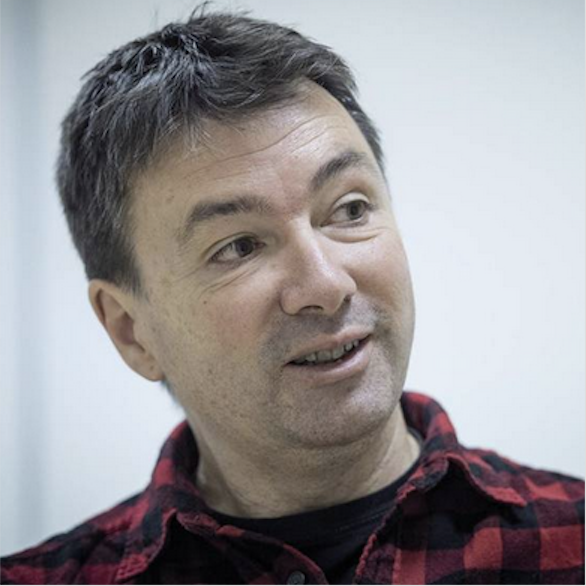

Overview
Knowledge extraction (KE) was mainly driven by task-specific human annotations. Recent years have seen an increasing interest in KE with indirect supervision, weak supervision, self-supervision, etc. This workshop aims to provide a forum for researchers and practitioners from broad communities, such as information extraction (IE), knowledge graphs (KG), semantic web, and transfer learning, etc., to discuss the challenges and promises of KE when human annotations are limited.
This workshop aims to bring together researchers from different areas related to KE. As such, the workshop welcomes and covers a wide range of topics, including (non-exclusively):
- IE/KE with indirect supervision from textual entailment, summarization, etc.
- IE/KE with weak supervision and denoising.
- IE/KE with self-supervision, e.g., pretrained LMs for IE/KE.
- KG construction and consolidation.
- Low-resource IE/KE.
- KE in industry settings.
Contact: IWSKR2022@gmail.com
Call for papers
We invite submissions that are flexibally aligned with above topics. Since the workshop is not intended to have a proceeding comprising full versions of the papers, concurrent submissions to other venues, as well accepted work, are allowed. Accepted work will be presented as oral during the workshop and listed on this website. At least one of the authors of each accepted submission will be required to present the work virtually.
- Paper: 4 pages + reference
- Extended abstract: 1 page + reference
Registration
TBD
Important Dates
- Sept. 30: Paper submission deadline
- Oct. 5: Notification of acceptance
All deadlines are 11.59 pm UTC -12h (“anywhere on Earth”).
Invited Speakers
|
Prof. Heng Ji |

Prof. Eneko Agirre |
Prof. Yizhou Sun |

Dr. Hoifung Poon |
We will also have a panel discussion with speakers.
Schedule
TBD
Organizing Committee
- Wenpeng Yin, Temple University
- Muhao Chen, University of Southern California
- Lifu Huang, Virginia Tech
- Huan Sun, The Ohio State University
- Hongming Zhang, Tencent AI Lab, Seattle
- Benjamin Roth, University of Vienna
- Barbara Plank, LMU Munich